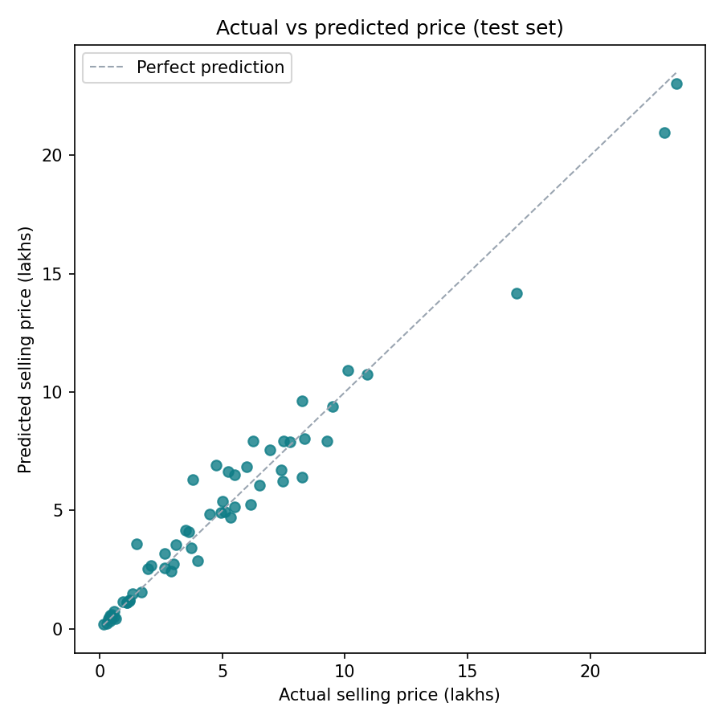
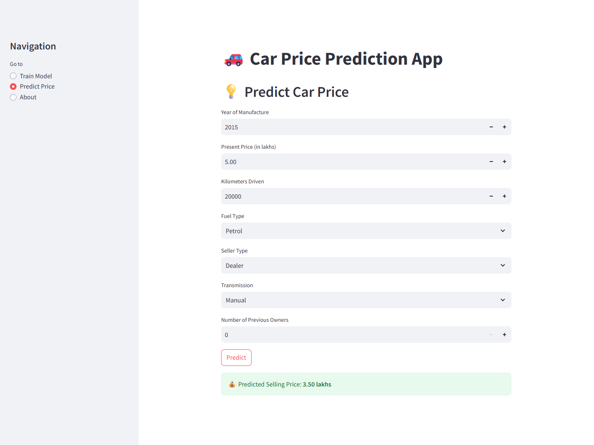
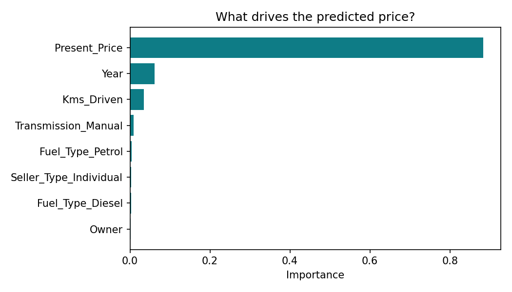
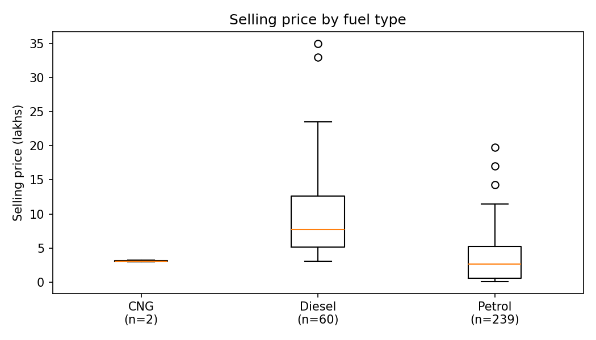

How accurate is the price estimate?
Result pending: test-set MAE, RMSE and R² are being re-run.

Case study · Analytics and BI
A CodeAlpha regression project: estimate a used car's selling price from its age, original price, mileage, fuel type, seller type and transmission.

A used-car dealer or seller wants a fair asking price. Which features of a car drive its resale value, and can we estimate a price from them reliably?
data/car data.csv).Result pending: test-set MAE, RMSE and R² are being re-run.

Result pending: feature importance from the trained model.

Result pending.

To be written once the findings above are in.